Discord Status
Connected
NOW SHOWING
WATCHING · NETFLIX
Stranger ThingsS1 E1 · The Vanishing of Will Byers12:0847:23
AutoDetect and update
Active tabOnly this tab
ManualYour own status
SpotifyThe Moves · ODESZA2:34

GitHubdiscord-statusActive